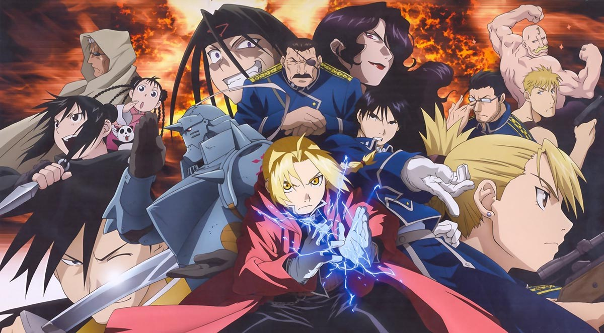
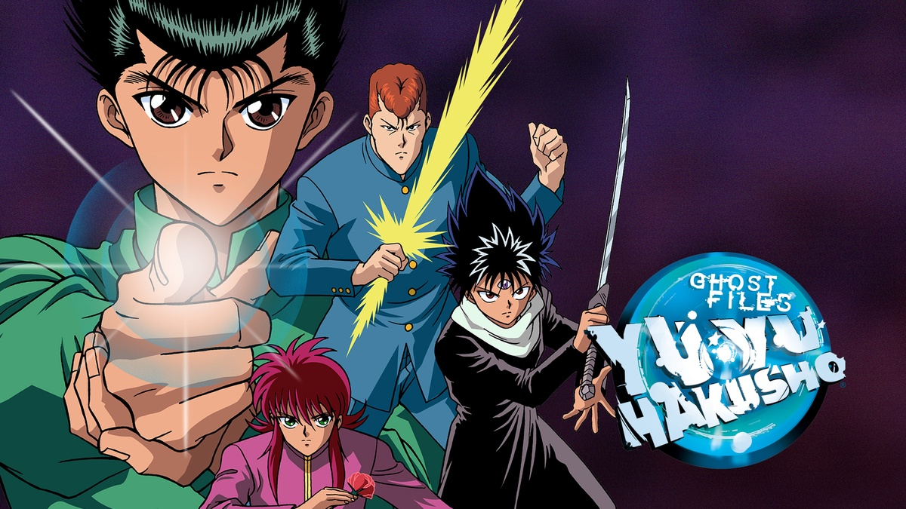
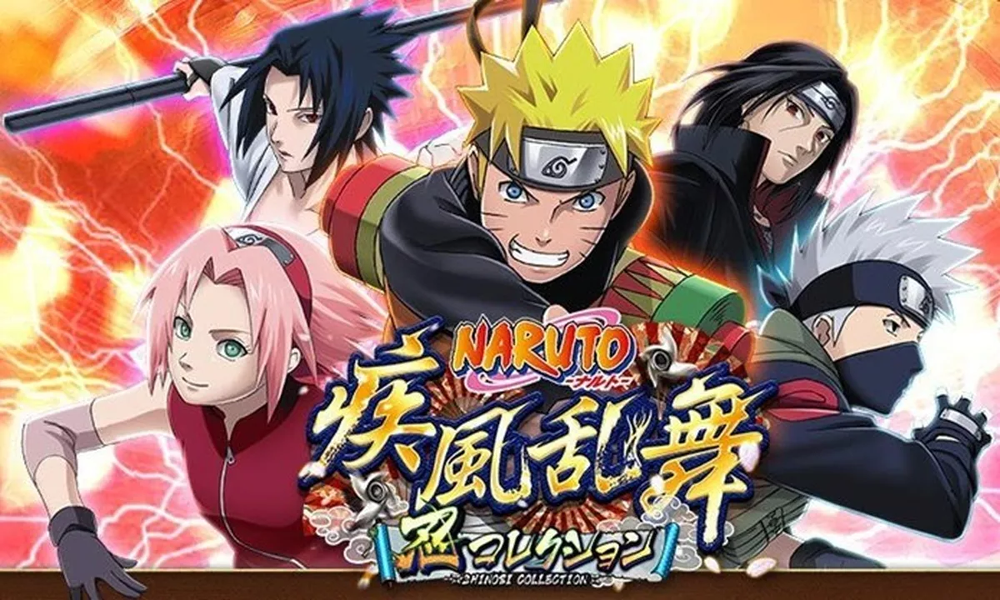
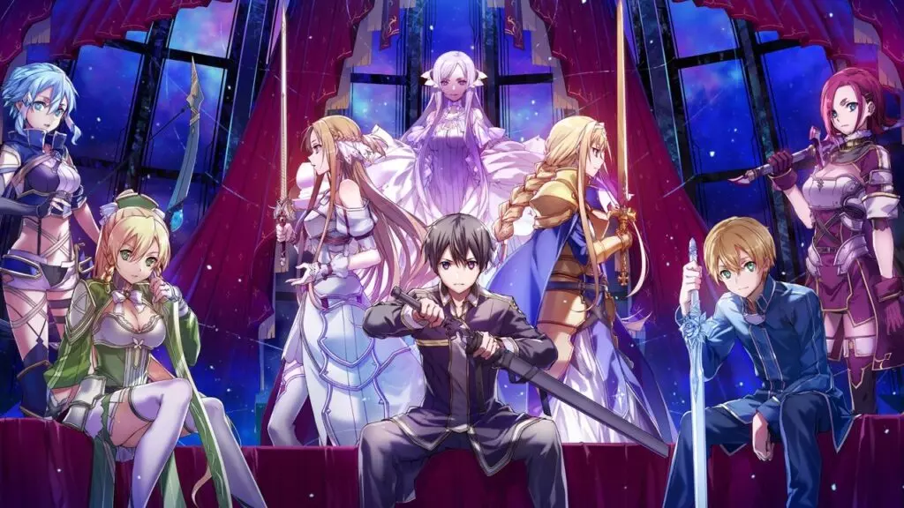
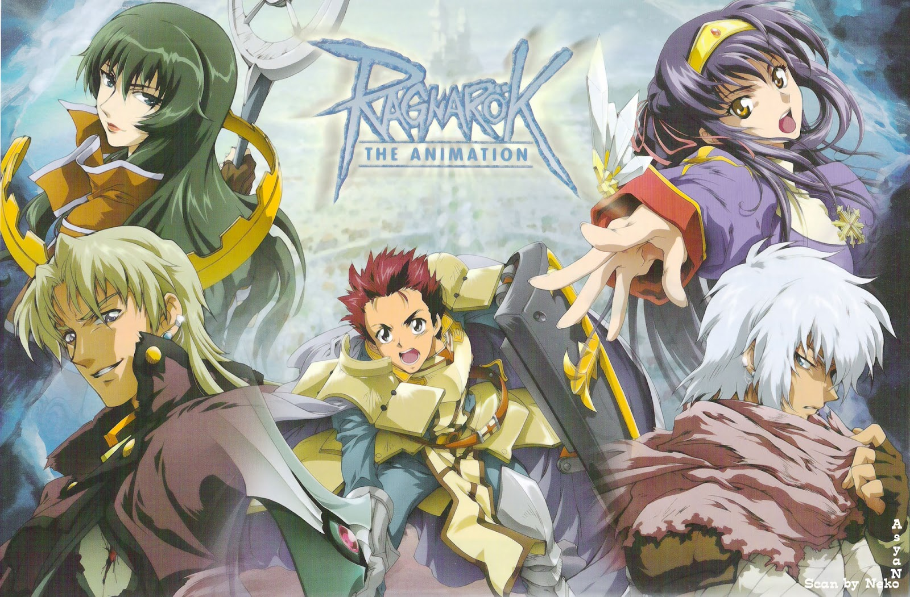

FullMetal Alchemist

SINOPSE
Dois irmãos perdem a sua mãe devido a uma doença incurável. Com o poder da alquimia, usam um conhecimento proibido para a ressuscitar. O processo falha e como consequência dos seus actos, Edward Elric sacrifica o seu braço direito para afixar a alma do irmão a uma armadura. Com a ajuda de amigos da família, Edward recebe próteses metálicas para substituir os membros que perdeu. Com isso, Edward compromete-se a procurar a Pedra Filosofal para recuperar os seus corpos originais mesmo que isso signifique tornar-se num Alquimista Nacional.
Ver Trailer
InuYasha

SINOPSE
Kagome era uma garota normal, uma colegial até que um dia, um monstro a pegou e através de um poço ela caio na era feudal. Lá ela reviveu inuyasha um meio yokai e em seguida acabou sem querer destruindo um objeto muito poderoso, a grande joia de 4 almas, Kagome é a unica que pode ver seus fragmentos.Entao inuyasha é obrigado a partir com ela em uma jornada para recuperar todos os fragmentos de joia. Ao longo de sua jornada conhecem muitos amigos como Mirok ,Sango, Kirara e Shippou. Inuyasha começa odiando Kagome, mas ao longo do anime, seus sentimentos mudam.
Ver Trailer
YuYu Hakusho

SINOPSE
Um dia, Yusuke Urameshi, de 14 anos, de repente se encontra morto, tendo morrido empurrando uma criança para fora do trânsito. Como ele tem uma personalidade tão ruim, até mesmo o Mundo Espiritual foi pego de surpresa por ele se sacrificar. Yusuke logo descobre que não deveria morrer e tem uma chance de ressurreição e trazer seu corpo de volta à vida. Após ser ressuscitado, Yusuke se torna um Spirit Detective, junto com seus companheiros, e uma aventura após a outra acontece, seja uma investigação ou um torneio de luta.
Ver Trailer
Hunter X Hunter

SINOPSE
Monstros amedrontadores, criaturas exóticas, riquezas vastas, tesouros misteriosos, terras vis e terras inexploradas... Gon parte em uma aventura para se tornar um caçador profissional que arrisca a própria vida em busca do desconhecido. Pelo caminho, ele conhece outros participantes da Prova dos Caçadores: Kurapika, Leorio e Killua. Será Gon capaz de vencer os grandes desafios da Prova de Caçadores e se tornar o melhor do mundo? Esta jornada selvagem e épica está prestes a começar!!
Ver Trailer
Naruto

SINOPSE
A série gira em torno das aventuras vividas por Naruto Uzumaki, um jovem órfão habitante da Aldeia da Folha que sonha em se tornar o quinto Hokage, o maior guerreiro e governante da vila. Ao se graduar como ninja, Naruto descobre que tem um demônio raposa selado dentro de si. Seu pai, o quarto Hokage, aprisionou a raposa no próprio filho quando a entidade ameaçava destruir a Aldeia da Folha, sacrificando assim a própria vida. Ao lado dos colegas, em especial Sakura, Sasuke e o mentor Kakashi Hatake, ele persegue a árdua missão de se tornar o maior ninja e deter aqueles que planejam fazer mal à sua cidade. O jovem trio que se forma quando Naruto está em busca de treinamento embarca em diversas missões para a aldeia e, durante o exame ninja, surge o vilão Orochimaru, um criminoso procurado.
Ver Trailer
Sword Art Online

SINOPSE
No ano de 2022, finalmente é possível criar um mundo virtual dentro de um jogo graças à consola NerveGear e ao seu mais recente jogo, Sword Art Online, um MMORPG de realidade virtual. No entanto, passado algum tempo de entrarem no jogo, os jogadores de SAO descobrem que não conseguem sair do jogo. É então que o criador do jogo, Akihiko Kayaba, lhes diz que estão presos dentro do jogo e que, se morrerem lá, morrem também na vida real. A única maneira de todos os 10 mil jogadores presos dentro do jogo saírem de lá, é chegando ao 100º e último andar e derrotando o último boss.
Ver Trailer
Ragnarok the Animation

SINOPSE
Um grande mal varre o reino, e o jovem espadachim Roan, junto com sua companheira de longa data Yufa, deve enfrentá-lo.
Ver Trailer